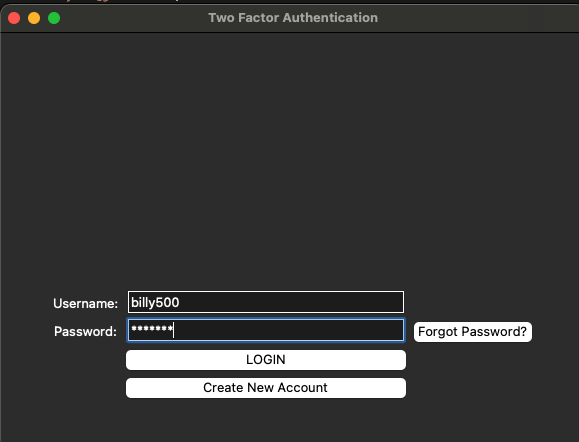

Available on my GitHub

This app simulates a two-factor authentication login system. The purpose of this personal object is to learn more about utilizing tkinter GUI for a frontend user experience and exploring the qrcode and pyotp libraries.
With this app, users can create multiple accounts that stores their username, password, and email address. For simplicity, their information is stored in a JSON file in dictionary format. If a user forgets their password, they can use their email to verify their identity and create a new one
Once the user enters their username and password, a QR code will be created for them to scan with the Google Authenticator App so they can access the verification code for them to enter and also view the code's expiration time.
If I were to improve on this project, I would like to utilize SMTP or something similar so I can send the QR code or verification code to the user's email address instead of the QR code being created locally for a more secure login system. Additionally, I would also like to use SQL or a more complex database to safely secure the users' information.